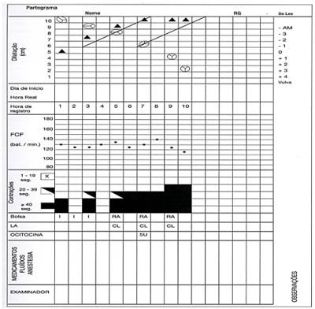
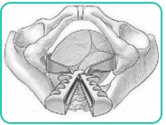
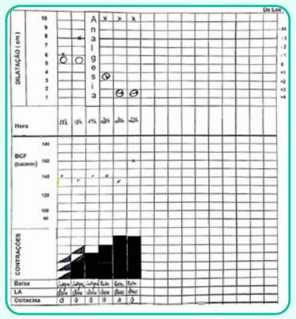
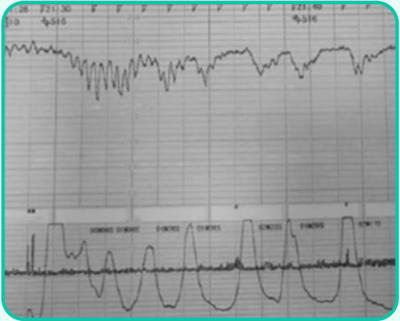
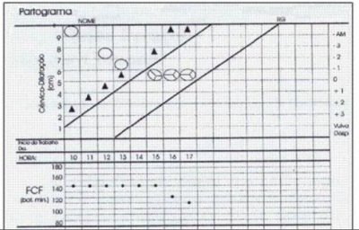
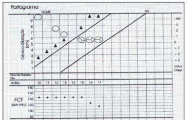

Questão 1 · Aplicação do f órcipe · 4000188848São consideradas condições obrigatórias para a practibilidade do fórcipe na apresentação cefálica as relacionadas a seguir, exceto:
A dilatação total do colo uterino
B membranas ovulares rotas
C identificação da variedade de posição
D realização de raquianestesia
Questão 2 · Aplicação do f órcipe · 4000188264Em relação às condições de aplicabilidade do fórcipe, considere verdadeira (V) ou falsa (F) as seguintes condições necessárias para a sua aplicação. ( ) Colo com dilatação acima de 7 cm; ( ) Bolsa amniótica rota. ( ) Proporcionalidade cefalopélvica. ( ) Feto Vivo. ( ) Diagnóstico da variedade de posição. Assinale a alternativa que contém, de cima para baixo, a sequência correta:
A F, V, V, V, V
B F, F, V, V, V
C V, F, V, F, V
D V, V, V, F, F
E V, F, F, F, V
Questão 3 · Tipos de f órcipes · 4000187928Quando grandes rotações da cabeça fetal são necessárias, qual o fórcipe mais indicado?
A Simpson.
B Piper.
C Tamier.
D Kielland.
Questão 4 · Tipos de f órcipes · Aplicação do f órcipe · 4000187515No acompanhamento de trabalho de parto com dilatação total, feto em Occípito-Púbica, bolsa rota, altura + 3 de De Lee, período expulsivo prolongado, o fórcipe mais indicado nesse momento é:
A Simpsom-Braum.
B Piper.
C Mauriceau.
D Kielland.
Questão 5 · Parto vaginal operatório · Indicações e contraindicações · 4000186808Sobre o procedimento de episiotomia médio-lateral direita no parto vaginal, qual das alternativas abaixo corresponde a assertiva correta com base em evidências científicas atuais?
A Não constitui fator de risco para incontinência urinária de esforço no pós-menopausa.
B Deiscências da ferida, abscessos e fístulas são complicações possíveis.
C Deve ser realizada rotineiramente apenas nos partos vaginais de primigestas.
D Sua realização precoce no período expulsivo reduz o tempo de evolução ao parto vaginal.
E Deve ser realizada rotineiramente em todo parto vaginal.
Questão 6 · Parto vaginal operatório · Obstetrícia · 4000185239Com relação ao fórceps, assinale a alternativa correta.
A É possível a aplicação de fórceps no caso de fetos em apresentação pélvica.
B O Fórceps de Kielland tem curvatura pélvica acentuada.
C O Fórceps de Simpson realiza rotações de 90°.
D A variedade de posição OEA necessita de rotação de 90° em sentido horário.
E A variedade de posição ODT necessita de rotação de 90° em sentido anti-horário.
Questão 7 · Parto vaginal operatório · Fórcipe · Indicações e contraindicações · 4000184618Paciente primigesta, gestação de 40 semanas e pré-natal sem intercorrências. Admitida às 6hs no centro obstétrico em fase ativa do trabalho de parto, colo 90% apagado, com dilatação de 5cm, DU-2/30"/10". Apresentação cefálica, bolsa íntegra, BCF 140bpm. plano de De Lee -3, transverso à direita. Avaliação das 11h mostrou colo no central, permeável para 6cm, plano De Lee zero, transverso à direita, amniorrexe com líquido claro traçado cardiotocográ co tranquilizador. Às 13h, dilatação de 7cm, De Lee +1, occipito direito anterior. Às 15h apresentava 10cm de dilatação, De Lee +2, occipito púbico. Às 19h paciente está completamente exausta e ainda se encontra com 10cm, De Lee de +2, líquido meconial uido e BCF 100bpm, 4/40"/10". Considerando o caso descrito, a conduta MAIS apropriada nesse momento é o:
A Parto vaginal operatório e indicação do uso de vácuo extrator.
B Parto vaginal operatório e indicação de forceps de Kieland.
C Parto vaginal operatório e indicação de forceps de Simpson.
D Parto operatório e indicação de cesariana de urgência.
Revisar: possível letra faltando em enunciado
Questão 8 · Aplicação do vácuo extrator · Tipos de f órcipes · Funções do f órcipe · 4000183992Para terminação do parto vaginal têm-se dois procedimentos instrumentais, isto é, o fórcipe e o vácuo-extrator. Em relação a esses procedimentos, pode-se afirmar que
A a vantagem do vácuo-extrator é que pode ser utilizado em apresentação pélvica.
B o vácuo-extrator não permite proceder rotações de variedade de posição,somente apresentações em OP.
C o fórcipe de Simpson-Braun é o indicado para abreviação de período expulsivo em variedades transversas.
D o fórcipe de Kjelland é o ideal para rotações, pois é um fórcipe reto, sem curvatura perineal.
Questão 9 · Parto vaginal operatório · Distocia f uncional de objeto de trajeto · Obstetrícia · 4000181884Uma primigesta, cardiopata por doença reumática, classe funcional NYHA I, com boa evolução do trabalho de parto, apresenta parada na progressão. A apresentação é occipito direita transversa e com assinclitismo anterior, plano +2 de DeLee. Os batimentos cardíacos fetais estão em 128bpm. Considerando o quadro clínico apresentado, a melhor conduta no momento seria:
A Cesariana de emergência.
B Fórcipe de Simpson.
C Fórcipe de Kielland.
D Fórcipe de Piper.
E Aguardar a evolução do parto.
Questão 10 · Aplicação do f órcipe · 4000175521Um paciente em trabalho de parto, G2P1, está com 5 contrações em 10 minutos, dilatação completa, no plano +4 de DeLee, com bolsa rota e variedade de posição occipitoesquerda anterior. Foi detectada bradicardia fetal (<100bpm), mesmo após cessada a contração, associada à eliminação de mecônio espesso. A conduta mais adequada é:
A ultimar o parto com o auxílio de fórcipe
B realizar cesárea imediatamente
C ultimar o parto com manobra de Kristeller
D aguardar a ocorrência do parto espontâneo
Questão 11 · Aplicação do f órcipe · Obstetrícia · 4000171092O fórcipe obstétrico é o instrumento destinado a auxiliar a extração fetal por meio da preensão do polo cefálico, diminuindo a duração do segundo período do parto. Entre as indicações do uso do fórcipe, podemos citar:
A doença cardíaca materna, exaustão materna, sofrimento fetal agudo no expulsivo, bolsa das águas rota.
B doença cardíaca materna, comprometimento pulmonar materno, infecção amniótica, doença neurológica materna com déficit motor, exaustão materna.
C colo completamente dilatado, exaustão materna, distócia de rotação fetal, cabeça fetal insinuada.
D cabeça derradeira, concepto vivo, doença cardíaca materna, período expulsivo prolongado.
E comprometimento pulmonar materno, doença neurológica materna com déficit motor, cabeça fetal insinuada e volume cefálico fetal normal.
Questão 12 · Parto vaginal operatório · Obstetrícia · 4000170621Uma parturiente encontra-se em período expulsivo, com feto em apresentação pélvica. Com base nesse caso hipotético, assinale a alternativa que apresenta o fórceps adequado para a instrumentalização do parto.
A fórceps de Kielland
B fórceps de Piper
C fórceps de Simpson-Braun
D fórceps de Marelli
E fórceps de Sellheim
Questão 13 · Parto vaginal operatório · 4000170393Em relação às episiotomias, qual das seguintes afirmações é verdadeira?
A Elas aumentam a incidência de trauma de esfíncter anal.
B Elas devem ser indicadas rotineiramente no parto de gestantes nulíparas.
C Elas são equivalentes a uma laceração espontânea de primeiro grau.
D O uso da episiotomia seletiva se relaciona a mais trauma de esfíncter anal quando comparado à episiotomia rotineira.
Questão 14 · Segundo periodo expulsivo · Tipos de f órcipes · 4000169801Primigesta, 41 anos, 40 semanas e 5 dias, em trabalho de parto, evoluindo de acordo com o partograma a seguir. Considerando as recomendações atuais para uma assistência adequada ao parto, marque a afirmativa correta.

A A verticalização da posição materna de parto, o uso do vácuo extrator ou fórcipes pode auxiliar na abreviação do período expulsivo.
B Após a última avaliação, a realização de episiotomia auxiliaria na ultimação do parto.
C A manobra de Kristeller (pressão sobre o fundo uterino) deve ser aplicada. Não havendo sucesso, fica caracterizada a desproporção cefalopélvica e a cesariana deve ser a via de parto escolhida.
D Recomenda-se a ruptura da bolsa amniótica e aumento da dose de ocitocina, para auxiliar o período expulsivo.
Questão 15 · Parto vaginal operatório · Obstetrícia · Parto · 4000169434Segundo os princípios básicos da aplicação do fórcipe, a dupla pega de Scanzoni poderá ser necessária nas apresentações
A cefálicas, variedades transversas, para as rotações de 90⁰ com fórcipe de Kielland.
B cefálicas, variedades anteriores oblíquas, para as rotações de 45⁰ com fórcipe de Simpson.
C pélvicas, modo de nádegas (agripina), para as rotações de 45⁰ com fórcipe de Piper.
D cefálicas, variedades posteriores oblíquas, para as rotações de 135⁰ com fórcipe de Simpson.
E cefálicas, variedades anteriores oblíquas, para as rotações de 135⁰ com fórcipe de Piper.
Questão 16 · Parto vaginal operatório · 4000168431Sobre o parto pode-se afirmar que:
A a Manobra de Kristeller é um procedimento útil para se abreviar o período expulsivo e garantir a vitalidade do concepto, sem danos maternos devido a sua segurança.
B a episiotomia reduz a probabilidade de lacerações perineais graves, por isso deve ser realizada de rotina em todos os partos.
C o partograma é a representação gráfica do trabalho de parto e deve ser aberto assim que a paciente é internada na emergência obstétrica.
D deve-se traçar a linha de ação 5 horas após a linha de alerta.
E não há diferença nos resultados perinatais nem redução da incidência de asfixia nos partos com episiotomia seletiva versus episiotomia de rotina.
Questão 17 · Aplicação do f órcipe · Assinclitismo · 4000167689Uma parturiente com idade gestacional de 40 semanas e 4 dias, primigesta, pré-natal de baixo risco sem intercorrências, AFU = 42 cm, encontra-se com colo pérvio para 8 cm ao toque vaginal, bolsa rota com líquido amniótico claro, polo cefálico há quatro horas mantendo-se no plano +1 de De Lee com bossa ++/4+ e assinclitismo de Litzmann. Veri ca-se cardiotocografia basal com padrão tranquilizador. Tendo em vista o caso clínico apresentado, julgue o item. Há desproporção cefalopélvica (DCP) e está indicada a aplicação de fórceps.
A Certo.
B Errado.
Revisar: possível letra faltando em enunciado
Questão 18 · Tipos de f órcipes · Obstetrícia · 4000167160O fórcipe pode ser classificado, quanto à aplicação, de acordo com o nível de descida e à variedade de posição da apresentação fetal. Durante o período expulsivo prolongado do trabalho de parto, constata-se feto em variedade de posição OET e apresentação no plano +3 de DeLee. O fórcipe idealmente empregado para resolução desse parto é
A Kielland.
B Simpson.
C Piper.
D Barton.
E Elliot.
Questão 19 · Aplicação do f órcipe · 4000166969O fórceps é um instrumento utilizado no parto vaginal, semelhante às pinças cirúrgicas. Nesse contexto, o requisito necessário à sua utilização é:
A A bexiga deve estar cheia.
B O colo do útero deve estar um pouco dilatado.
C Deve-se administrar anestesia adequada para a gestante, caso haja tempo.
D A cabeça do bebê pode estar encaixada na pelve.
Questão 20 · Aplicação do f órcipe · 4000166504São condições de aplicabilidade de fórcipe:
A Colo dilatado pelo menos 9 cm, bolsa das águas rota, desproporção céfalo pélvica.
B Concepto vivo, cabeça insinuada, desproporção céfalo pélvica.
C Colo completamente dilatado, bolsa das águas rota e estreitos médio e inferior compatíveis com o volume cefálico.
D Feto no plano -1 de De Lee, feto vivo e volume cefálico normal.
Questão 21 · Parto vaginal operatório · Obstetrícia · 4000166174Uma primípara de 39 semanas e seis dias encontra-se no segundo período do trabalho de parto há três horas e meia. Ao exame físico, dinâmica uterina presente, cinco contrações de 50 segundos em 10 minutos e BCF de 72 batimentos por minuto sustentado. Toque vaginal com dilatação cervical de 10 cm, bolsa rota, apresentação cefálica em plano +2 de De Lee e variedade de posição OET. Com base nesse caso hipotético, assinale a alternativa que apresenta a conduta adequada.
A fórceps de Simpson
B fórceps de Piper
C fórceps de Kielland
D manobra de Zavanelli
E manobra de Woods reversa
Questão 22 · Tipos de f órcipes · Manobras de desprendimento da cabeça derradeira · 4000165378O fórceps criado para aplicação nos casos de cabeça derradeira denomina-se
A Piper
B Barton
C Kielland
D Simpson
Questão 23 · Parto vaginal operatório · Indicações · Obstetrícia · 4000165128Em relação ao uso de fórcipe, qual dos abaixo tem seu uso indicado, para casos de cabeça derradeira encravada em apresentações pélvicas?
A Piper.
B Simpson.
C Braun.
D Kielland.
E Luikart.
Questão 24 · Aplicação do f órcipe · 4000174172Em relação às várias vias de parto e a sua assistência, é correto afirmar que
A se for indicar cesárea eletiva a pedido, esta deverá ser acima de 37 semanas, garantindo ser gestação de termo.
B em casos de sofrimento fetal, a indicação é via alta.
C em casos de desproporção cefalopélvica é válido, se estiver com colo dilatado, fazer fórcipe.
D feto em OET, em +3 de De Lee, a aplicação do fórcipe de Kjelland se faz locando inicialmente a colher anterior pela fronte.
E o controle dos batimentos cardíacos fetais no expulsivo deve ser feito a cada 30 minutos.
Questão 25 · Aplicação do f órcipe · 4000174067Não representa critério válido para aplicação de fórcipe de alívio ou fórcipe baixo:
A bolsa rota.
B plano zero de De Lee.
C apresentação cefálica.
D colo totalmente dilatado.
Questão 26 · Parto vaginal operatório · Complicações associadas ao parto vaginal · 4000173959Puérpera de parto vaginal, após 6 horas do parto se apresenta com sangramento profuso, taquicardia (FC 110 bpm), taquipneica e hipotensa (80/40mm Hg). Seu estado de consciência está comprometido. Assinale abaixo a alternativa CORRETA que inclui somente situações clínicas que incrementam o risco de ocorrer o quadro clínico descrito acima.
A Trabalho de parto prolongado por feto macrossômico, anemia materna durante a gestação e episiotomia ampla.
B Concepto com trissomia; sífilis gestacional e antecedentes de hiperemese gravídica nesta gestação.
C Parto com a participação de doula, gravidez prolongada e uso de uterotônicos após a dequitação placentária.
D Pouco ganho de peso materno durante a gravidez, tabagismo e uso de corticoterapia para estimular amadurecimento pulmonar fetal.
Questão 27 · Tipos de f órcipes · Aplicação do f órcipe · 4000173650Em relação ao parto instrumentalizado, assinale a alternativa correta: I- O fórceps de Piper é usado para partos de apresentação pélvica. II- Fórceps de Kieland é considerado de alívio. III- O vácuo extrator promove mais lesão do assoalho pélvico materno do que fórceps de rotação.
A Todas corretas.
B Todas incorretas.
C Somente I correta.
D Somente III correta.
E Somente II e III corretas.
Questão 28 · Parto vaginal operatório · Condições de aplicabilidade · Período expulsivo prolongado · 4000172875Primigesta, 22 anos, em fase ativa do trabalho de parto há 6 horas, bolsa rota há 2 horas, apresenta-se com dilatação completa, plano +3 de Delee, feto cefálico em occipto púbica. A frequência cardíaca fetal encontra-se em 80 bpm de forma sustentada, caracterizando sofrimento fetal. A conduta correta, neste momento, após orientar a paciente, é realizar
A cesariana de urgência, sem sondagem vesical de alívio, e anestesia peridural.
B episiotomia médio-lateral, sondagem vesical de alívio e aplicar fórcipe de Simpson.
C episiotomia médio-lateral, sondagem vesical de alívio e aplicar fórcipe de Piper.
D cesariana de urgência, com sondagem vesical de demora e anestesia raquidiana.
Questão 29 · Parto vaginal operatório · Indicações · Def inição de parto vaginal operatório · 4000172523A episiotomia, procedimento tocúrgico, que é hoje considerada agressão obstétrica, continua tendo indicações excepcionais. Se for realizada, deve-se optar pela incisão médio lateral à direita em relação a incisão mediana porque traz como maior vantagem:
A Menor intensidade de dor puerperal;
B Recuperação cicatricial mais rápida;
C Menor risco de extensão da ferida para reto e esfincter anal;
D De realização mais fácil;
E Proporciona menor risco de infecção local;
Questão 30 · Tipos de f órcipes · 4000171509Quando é necessário realizar o fórceps e fazer a rotação do polo cefálico que encontra-se em posição transversa, o tipo de fórceps mais apropriado é:
A Kielland.
B Piper.
C De Lee.
D Simpsom.
Questão 31 · Funções do f órcipe · Vantagens e desvantages do vácuo extrator · Fórcipe · 4000153349Quanto às vantagens do fórceps em relação ao vácuo-extrator na abreviação do segundo período do trabalho de parto, considere as afirmativas a seguir. I. É menos traumático para a mãe. II. Está associado a maior taxa de sucesso. III. Pode ser utilizado nos fetos prematuros. IV. Mais improvável de se desprender no momento da tração do polo cefálico. Assinale a alternativa correta.
A Somente as afirmativas I e II são corretas.
B Somente as afirmativas I e IV são corretas.
C Somente as afirmativas III e IV são corretas.
D Somente as afirmativas I, II e III são corretas.
E Somente as afirmativas II, III e IV são corretas.
Questão 32 · Tipos de f órcipes · Aplicação do f órcipe · 4000152022A respeito da técnica de aplicação do fórceps, é correto afirmar que essa imagem representa a aplicação:

A correta das pás do fórceps de Kielland, em variedade de posição occipitoesquerda transversa, já iniciada rotação para occipitopúbica.
B errada das pás do fórceps de Simpson, em variedade de posição occipitodireita posterior.
C equivocada das pás do fórceps de Piper, em variedade de posição occipitodireita posterior, já que deve ser utilizado em apresentações pélvicas.
D correta das pás do fórceps de Kielland, em variedade de posição occipitodireita transversa, já iniciada rotação para occipitossacra.
E errada das pás do fórceps de Simpson, em variedade de posição occipitoesquerda anterior.
Questão 33 · Tipos de f órcipes · Aplicação do f órcipe · Distocia de descida · 4000152018Primigesta de 21 anos de idade está com 38 semanas de gestação e iniciou trabalho de parto espontâneo. O partograma e a cardiotocografia estão apresentados a seguir: Qual é o método indicado para ultimação do parto?


A Abreviação com vácuo extrator.
B Cesárea segmentar transversa.
C Aguardar parto espontâneo.
D Rotação com fórcipe Kielland
E Abreviação com fórcipe Simpson-Braun.
Questão 34 · Parto vaginal operatório · Tipos de f órcipes · Distocia f uncional de objeto de trajeto · 4000145926Uma primigesta, com quarenta semanas e quatro dias de gestação, encontra-se analgesiada, em período expulsivo há 3 h. Passou, então, a apresentar bradicardia fetal persistente, com BCF de 65 bpm há quatro minutos. Ao exame físico: altura uterina – 34 cm; e dinâmica uterina – quatro contrações de 35” em 10’. Ao toque vaginal, colo com dilatação total. Bolsa rota. Apresentação cefálica fletida, sem assinclitismo, em +2 de DeLee e variedade de posição OEA. Nessa situação hipotética, a conduta será fórceps de
A Simpson, com rotação de 45° no sentido horário.
B Simpson, com rotação de 45° no sentido anti-horário.
C Kielland, com rotação de 90° no sentido horário.
D Kielland, com rotação de 90° no sentido anti-horário.
E Kielland, sem rotação.
Questão 35 · Aplicação do f órcipe · 4000145029Secundípara, no segundo período do parto, feto cefálico, com variedade de posição Occipito-Esquerda-Transversa (OET), plano +2 de De Lee, atividade uterina de 4/1 O', sem evolução há duas horas, sangue do escalpe com pH de 7.16. Qual a conduta CORRETA?
A Fórcipe de Simpson-Braun
B Vácuo extrator
C Cateter de 02 e aguardar mais 30 minutos
D Manobra de Kristeller
E Fórcipe de Kielland.
Questão 36 · Funções do f órcipe · Aplicação do f órcipe · 4000143703Sobre o uso do Fórceps, é correto afirmar:
A Fórceps é uma técnica inócua, que não causa lesão aos tecidos maternos ou do concepto.
B O fórceps de Piper é aplicado em cabeça derradeira, principalmente para evitar força exagerada na manobra Mauriceau.
C A maioria dos fórceps bem indicados são para rotação, ocasionalmente sendo usado para tração.
D O concepto vivo e de cabeça insinuada, o colo completamente dilatado e a rotura das membranas (espontânea ou por amniotomia) são condições suficientes para praticabilidade.
E O Fórceps de Demelin, Simpson e Kielland são os mais indicados para a função de rotação.
Questão 37 · Parto vaginal operatório · Fórcipe · Obstetrícia · 4000142185HOFFMAN, Barbara L. Ginecologia de Williams. 2. ed. Porto Alegre: AMGH Editora Ltda, 2014, com adaptações. A respeito da técnica de aplicação do forcéps, é correto afirmar que essa imagem representa a aplicação

A correta das pás do fórceps de Kielland, em variedade de posição occipitoesquerda transversa, já iniciada rotação para occipitopúbica.
B errada das pás do fórceps de Simpson, em variedade de posição occipitodireita posterior.
C equivocada das pás do fórceps de Piper, em variedade de posição occipitodireita posterior, já que deve ser utilizado em apresentações pélvicas.
D correta das pás do fórceps de Kielland, em variedade de posição occipitodireita transversa, já iniciada rotação para occipitossacra.
E errada das pás do fórceps de Simpson, em variedade de posição occipitoesquerda anterior.
Questão 38 · Parto vaginal operatório · Fórcipe · Obstetrícia · 4000141817Sobre o fórceps de Simpson, assinale a alternativa INCORRETA.
A É o mais empregado nas maternidades brasileiras.
B Articulação dos seus ramos é por deslizamento.
C O ramo esquerdo entra em contato com o lado esquerdo da pelve e o ramo direito entra em contato com o lado direito da pelve.
D As colheres possuem as curvaturas pélvica e cefálica.
E As colheres são fenestradas
Questão 39 · Tipos de f órcipes · 4000141541O fórcipe de Piper é indicado
A nas cefálicas defletidas de 1º grau.
B nas apresentações pélvicas após falha da manobra de Bracht.
C nas variedades de posição transversas após falha da manobra de Bracht.
D nas cabeças derradeiras por distocia de ombro.
E nas apresentações cefálicas defletidas de III grau.
Questão 40 · Vácuo extrator · 4000141374Acerca do vácuo extrator, método utilizado para a indução do parto, é CORRETO afirmar:
A A pressão de vácuo deve ser reduzida entre as contrações.
B As contraindicações são diferentes do que ocorre com o parto com fórceps.
C A pressão de vácuo não deve ser mantida por mais de 30 minutos.
D Seu uso deve ser evitado em fetos com menos de 33 semanas de idade gestacional.
Questão 41 · Parto vaginal operatório · Partograma · Avaliação da vitalidade f etal intraparto · 4000140850Primigesta de 21 anos de idade, está com 38 semanas de gestação e iniciou trabalho de parto espontâneo. O partograma e a cardiotocografia estão apresentados a seguir. Qual é o método indicado para ultimação do parto?


A Abreviação com vácuo extrator.
B Cesárea segmentar transversa.
C Aguardar parto espontâneo.
D Rotação com fórcipe Kielland.
Questão 42 · Aplicação do f órcipe · Período expulsivo prolongado · 4000140773Observe o partograma a seguir Considerando o partograma, o obstetra resolveu realizar uma cardiotocogra a às 07 horas, a m de monitorar o período expulsivo, cujo resultado está apresentado abaixo. Com base na cardiotocografia e no partograma, marque a afirmativa correta.


A Deve-se realizar manobras de ressuscitação intrauterina e abreviação do período expulsivo com a aplicação de fórceps.
B A presença de mecônio às 06 horas no partograma já confirmava o diagnóstico de sofrimento fetal intraparto.
C O índice PH de 7,25 no sangue colhido do cordão umbilical no pós-parto imediato confirma o diagnóstico de sofrimento fetal agudo (intraparto).
D Observam-se na cardiotocografia desacelerações do tipo I (DIP umbilical) e manobras de ressuscitação intrauterina e cesariana estão indicadas.
Questão 43 · Parto vaginal operatório · Obstetrícia · Parto · 4000138693Acerca dos fórcipes, assinale a alternativa correta.
A O fórcipe de Simpson-Braun apresenta uma articulação fixa por encaixe, com colheres fenestradas, e deve ser utilizado para as variedades transversas.
B O fórcipe de Simpson-Braun apresenta uma articulação de deslize do ramo direito sobre o esquerdo, o que permite a correção de assinclitismo e facilita sua rotação.
C A indicação do fórcipe de Kielland limita-se às variedades de posição oblíquas e às pegas diretas (púbica e sacra).
D O fórcipe de Piper é utilizado nas apresentações pélvicas e visa a auxiliar no desprendimento da cabeça derradeira.
E O fórcipe de Simpson-Braun poderá ser utilizado nas situações em que a rotação interna for mínima (≤ 45o), isto é, nas variedades anteriores, ou máxima (135o), isto é, nas oblíquas posteriores.
Questão 44 · Parto vaginal operatório · Tipos de f órcipes · Fórcipe · 4000137478Em período expulsivo prolongado de uma primípara a termo, optou-se pela aplicação de fórceps. Exame obstétrico: apresentação cefálica, em assinclitismo, variedade de posição occipito esquerda transversa e plano +1 de De Lee. Pode-se afirmar que o fórceps a ser utilizado neste parto é:
A Simpson
B Kielland
C Piper
D Barton
Questão 45 · Aplicação do f órcipe · 4000124346Em relação à aplicabilidade do fórcipe, o conhecimento torna-se essencial para a prática obstétrica em determinadas situações. Sobre o tema, assinale a assertiva INCORRETA.
A As aplicações de fórcipe em apresentações altas no estreito médio do canal de parto devem ser evitadas no contexto das boas práticas
B O fórcipe de alívio requer algumas condições de aplicabilidade, sendo as principais: diagnóstico correto da variedade de posição, proporcionalidade feto-pélvica, apresentações baixas (De Lee= +3 ou +4.
C A pega ideal (frontomastoideia) deve ser preconizada com o intuito de reduzir tocotraumatismos fetais.
D Nas variedades transversas, utiliza-se o fórcipe de Kielland, sendo que a primeira colher a ser alocada é a anterior e mediante técnica migratória, reproduzindo a manobra de Lachapelle até ficar sob o pube.
E A revisão do canal de parto é indispensável, quando se realiza fórcipe baixo ou de alívio, pois se associa à baixa probabilidade de traumas perineais.
Questão 46 · Tipos de f órcipes · Aplicação do f órcipe · 4000107297Dentre as alternativas abaixo, qual seria uma indicação adequada de fórcipe de alívio ou de Simpson-Braun?
A Distócia de bisacromial em feto macrossômico.
B Variedade de posição oblíqua, altura de apresentação em 0.
C Cabeça derradeira em que as manobras usuais não surtiram efeito.
D Polo cefálico em OP, altura da apresentação em +3, com sofrimento fetal.
Questão 47 · Aplicação do f órcipe · 4000101014É condição fundamental para a aplicação do fórcipe:
A O pólo cefálico insinuado.
B O colo uterino totalmente dilatado.
C Feto hígido.
D Anestesia peridural ou raquidiana.
Questão 48 · Aplicação do f órcipe · 4000094584Sobre o uso do Fórceps, é correto afirmar:
A Fórceps é uma técnica inócua, que não causa lesão aos tecidos maternos ou do concepto.
B O fórceps de Piper é aplicado em cabeça derradeira, principalmente para evitar força exagerada na manobra Mauriceau.
C A maioria dos fórceps bem indicados são para rotação, ocasionalmente sendo usado para tração.
D O concepto vivo e de cabeça insinuada, o colo completamente dilatado e a rotura das membranas (espontânea ou por amniotomia) são condições suficientes para praticabilidade.
E O Fórceps de Demelin, Simpson e Kielland são os mais indicados para a função de rotação.
Questão 49 · Tipos de f órcipes · 4000070065Sobre o uso do Fórcipe é CORRETO afirmar:
A Na cabeça derradeira podem ser usados os fórcipes de Piper e de Kielland.
B O fórcipe de Simpson pode ter colheres fenestradas ou não.
C O fórcipe de Simpson tem acentuada curvatura pélvica.
D O fórcipe de Piper apresenta articulação por deslize para correção do assinclitismo.
E O fórcipe de Kielland não deve ser a primeira escolha nas variedades oblíquas.
Questão 50 · Tipos de f órcipes · 4000053106O fórcipe obstétrico é o instrumento destinado a extrair fetos por preensão do polo cefálico e, dessa forma, diminuir o tempo do segundo período do parto. Com relação aos tipos de fórcipes assinale as alternativas abaixo. I. Os quatro fórcipes mais utilizados na prática clínica diária são os fórcipes de Simpson-Braun, de Kielland, de Luikart e de Piper. II. O fórcipe de Kielland é o fórcipe ideal para as variedades obliquas. III. O Piper é reservado para as apresentações cefálicas com distócia de ombro. IV. O Luikart se assemelha ao de Piper, porém não tem fenestra, distribuindo melhor a pressão. V. O fórcipe de Simpson-Braun apresenta articulação xa por encaixe, as suas colheres são fenestradas e têm curvatura pélvica acentuada. Sua indicação limita-se às variedades oblíquas e pegas diretas (púbica e sacra). Estão corretas apenas as alternativas
A I e V.
B I e IV.
C II e V.
D III e IV.
E IV e V.
Questão 51 · Tipos de f órcipes · 4000052229Dos fórcipes abaixo, o que a colher não tem curvatura pélvica é:
A Fórceps de Kielland.
B Fórceps de Barton.
C Fórceps de Piper.
D Fórceps de Simpson.
E Fórceps de De Lee.
Questão 52 · Tipos de f órcipes · 4000047012Qual é o fórceps mais utilizado na obstetrícia?
A Simpson.
B Piper.
C Barton.
D Kielland.
E Elliot.
Questão 53 · Complicações do vácuo extrator · 4000032888O parto vaginal assistido, seja com vácuo extrator ou com fórceps, é uma habilidade importante no manejo do segundo período do trabalho de parto. Cada trabalho de parto é um evento dinâmico, que pode requerer um parto vaginal assistido de emergência. Neste cenário, o uso de vácuo extrator, por sua facilidade de aplicação, menor necessidade de treinamento contínuo, e vantagens quanto a menores lesões perineais maternas, tem sido o instrumento preferido. Em 21 de maio de 1988 o FDA publicou uma recomendação de cuidado a todos os pro ssionais de saúde que fazem o parto vaginal assistido pelo vácuo, devido a uma complicação potencialmente mortal, que é caracterizado por:
A Lesão da artéria vaginal com potencial choque por hemorragia
B Cefalohematoma
C Lesão traumática da face fetal
D Hematoma sub – galeal
Questão 54 · Condições de aplicabilidade · Funções do f órcipe · Aplicação do f órcipe · 4000025171Uma paciente em trabalho de parto, G2P1, está com 5 contrações em 10 minutos, dilatação completa, no plano +4 de DeLee, com bolsa rota e variedade de posição occipitoesquerda anterior. Foi detectada bradicardia fetal (<100bpm), mesmo após cessada a contração, associada à eliminação de mecônio espesso. A conduta mais adequada é:
A ultimar o parto com o auxílio de fórcipe
B realizar cesárea imediatamente
C ultimar o parto com manobra de Kristeller
D aguardar a ocorrência do parto espontâneo
Questão 55 · Segundo periodo expulsivo · Indicações · Obstetrícia · 4000012285Parturiente de risco habitual, 26 anos de idade, 38 semanas completas de gestação, em trabalho de parto espontâneo e sem bloqueio neuraxial. A frequência cardíaca fetal antes, durante e após as contrações uterinas é de 136 batimentos por minuto. Paciente encontra-se em período expulsivo há 4 (quatro) horas, a apresentação é cefálica em OP e plano +3 de DeLee. O diagnóstico mais provável e a conduta mais adequada são, respectivamente:
A Período expulsivo prolongado; parto vaginal operatório.
B Período expulsivo adequado; continuação do período expulsivo.
C Período expulsivo prolongado; cesárea.
D Desproporção cefalopélvica absoluta; cesárea.
E Desproporção cefalopélvica absoluta; parto vaginal operatório.
Questão 56 · Tipos de f órcipes · 4000128045Assinale a alternativa correta quanto ao uso do fórcipe:
A O fórcipe de Pajot é utilizado em fetos pélvicos com cabeça derradeira.
B O fórcipe de Simpson não pode ser utilizado em apresentações anômalas como deflexão de 3° grau e occipto- sacral.
C O fórcipe de Kielland não possui curvatura pélvica, sendo por isso, o mais utilizado nas rotações.
D A altura da apresentação ideal para aplicação de fórcipe é no plano 0 de De Lee ou abaixo.
Questão 57 · Aplicação do f órcipe · 4000125617Em relação à aplicabilidade e uso do fórcipe (forceps) obstétrico, marque a CORRETA:
A parto.
B A aplicabilidade depende de condições técnicas: qualificação e treinamento médico, bolsa íntegra, dilatação cervical completa, boa proporção céfalo-pélvica e diagnóstico exato da variedade de posição.
C a pega ideal, denominada biparietomalomentoniana, torna-se mais provável quando aplica-se o fórcipe médio ou alto.
D Na variedade oblíqua esquerda anterior, o ramo direito ou anterior deve ser o primeiro a ser introduzido, preferencialmente quando o feto encontra-se em De Lee= +1.
E Nas variedades transversas, o fórcipe de Kielland deve ser o preferencial. A primeira colher a ser alocada é a anterior.
Questão 58 · Tipos de f órcipes · Funções do f órcipe · Indicações · 4000121331Uma primigesta de 39 semanas foi internada em trabalho de parto após ruptura das membranas ovulares e evoluiu normalmente até a dilatação total. Nesse momento, o vértice da apresentação estava em +2 DeLee e o ponto de reparo fetal, que é o lambda, estava voltado para a iminência ileopectínea esquerda. A situação se manteve da mesma forma por mais de cinquenta minutos, quando se iniciou uma bradicardia fetal persistente. Nesse caso hipotético, a melhor conduta seria
A locar fórcipe de Simpson com rotação anti-horária de 45 graus.
B realizar dupla pega para permitir a rotação anti horária de 135 graus.
C realizar cesariana imediata.
D locar fórcipe de Kielland com rotação horária de 45 graus.
E orientar puxos dirigidos para estimular o nascimento.
Questão 59 · Tipos de f órcipes · 4000096863O Fórceps mais adequado em caso de cabeça derradeira é:
A Kielland
B Piper
C Simpsom
D Demelin
Questão 60 · Condições de aplicabilidade · Aplicação do f órcipe · Indicações · 4000028384Um paciente em trabalho de parto, G2P1, está com 5 contrações em 10 minutos, dilatação completa, no plano +4 de DeLee, com bolsa rota e variedade de posição occipitoesquerda anterior. Foi detectada bradicardia fetal (<100bpm), mesmo após cessada a contração, associada à eliminação de mecônio espesso. A conduta mais adequada é:
A ultimar o parto com o auxílio de fórcipe
B realizar cesárea imediatamente
C ultimar o parto com manobra de Kristeller
D aguardar a ocorrência do parto espontâneo
Questão 61 · Condições de aplicabilidade · Tipos de f órcipes · Funções do f órcipe · 4000025489Embora o fórceps moderno tenha se originado de um instrumento de morte, foi concebido para salvar vidas. Os fórceps antigos eram usados para mutilar o feto, mas tinham como objetivo salvar a vida materna. Nos escritos de Hindu. 1.000 anos a.C, há referências a uma faca e um gancho usados em partos laboriosos, para perfurar e extrair o feto morto. Sobre o emprego do fórceps na obstetrícia atual, verifica-se que:
A atualmente, com o parto humanizado o fórceps não é mais utilizado, sendo contra indicado.
B uma de suas indicações é para ajudar fetos com desproporção céfalo-pélvica.
C não é utilizado para corrigir a rotação do polo cefálico fetal.
D na variedade de posição occipito-pubiana (OP) o fórceps indicado é o de Simpson,
Questão 62 · Fórcipe · 4000123058A aplicação do fórceps está indicada em qual das situações descritas?
A Apresentação pélvica, plano 3+ de DeLee, colo dilatado para 8 cm, bolsa íntegra.
B Apresentação cefálica defletida do 2º grau, colo dilatado para 10 cm, bolsa íntegra.
C Apresentação cefálica defletida do 3º grau, variedade mento-pube, plano 4+ de DeLee, colo dilatado para 10 cm, bolsa rota.
D Apresentação cefálica de vértice, OET, plano 3+ de DeLee, colo dilatado para 8 cm, bolsa íntegra.
E Apresentação cefálica defletida de 1º grau, plano 3- de DeLee, colo dilatado para 10 cm, bolsa rota.
Questão 63 · Aplicação do f órcipe · 4000120675São condições de aplicabilidade do fórceps.
A Bolsa integra e macrossomia.
B Amniorrexe e dilatação completa do colo.
C Bolsa integra e cabeça insinuada.
D Amniorrexe e desproporção cefalo pélvica.
E Bolsa integra com feto morto.
Questão 64 · Fórcipe · 4000117239Qual fórcipe é usado para alívio materno-fetal no parto vaginal, cefálico e fletido?
A Simpson Brown.
B Kielland.
C Piore.
D Marelli.
E Barros.
Questão 65 · Fórcipe · 4000109243Uma primigesta encontra-se em trabalho de parto no período expulsivo com colo totalmente dilatado, bolsa rota, líquido claro, apresentação cefálica em OET no plano +3 de De Lee há 40 minutos. A equipe optou pela realização de um fórcipe. Qual deverá ser o indicado, qual deverá ser a primeira colher e como deve ser locada?
A Fórcipe de Kjelland; primeira colher deverá ser a anterior, locada pela fronte.
B Fórcipe de Kjelland; a primeira colher deverá ser a posterior, com pega direta.
C Fórcipe de Simpson Braun; a primeira colher deverá ser a esquerda, com migração pela fronte.
D Fórcipe de Simpson Braun; a primeira colher deverá ser a anterior, com migração pela fronte.
E O fórcipe com o qual o aplicador estiver mais familiarizado, locando-se sempre primeiro a colher anterior pelo occipício.
Questão 66 · Fórcipe · 4000077774São consideradas condições obrigatórias para a praticabilidade do fórcipe na apresentação cefálica as abaixo relacionadas, EXCETO:
A Dilatação total do colo uterino.
B Membranas ovulares rotas.
C Identificação da variedade de posição.
D Realização de raquianestesia.
E Polo cefálico insinuado.
Questão 67 · Aplicação do f órcipe · 4000071315São consideradas condições de praticabilidade para aplicação do fórcipe:
A insinuação do polo cefálico e bolsa íntegra.
B bolsa rota e dilatação total do colo.
C dilatação total do colo e episiotomia.
D identificar a variedade de posição e preparo de colon.
E episiotomia e bolsa rota.
Questão 68 · Aplicação do f órcipe · 4000064865Em relação ao uso do fórcipe, podemos afirmar que:
A Esvaziamento vesical, dilatação completa, bolsa rota e diagnóstico correto da variedade de posição são condições de aplicabilidade.
B O fórcipe de Simpson está indicado nas variedades de posição transversas.
C O fórcipe de Kielland é indicado nas apresentações acima do plano -1 de De Lee.
D Nas apresentações pélvicas, em caso de emergência, já podemos utilizar o fórcipe de Piper a partir de 8 cm de dilatação.
Questão 69 · Aplicação do f órcipe · 4000056680Em relação ao uso do Fórcipe, marque a opção INCORRETA.
A No fórcipe de Kielland, a articulação é de deslize, do ramo direito sobre o esquerdo, o que facilita a correção do assinclitismo.
B O fórcipe é considerado de alívio quando o polo cefálico está abaixo do plano + 2 de De Lee e não atingiu o assoalho pélvico.
C O fórcipe exerce três funções básicas: preensão, rotação e tração.
D Colo completamente dilatado representa condição materna de aplicação do fórcipe.
E São considerados condições fetais: concepto vivo, cabeça insinuada e volume cefálico normal.
Questão 70 · Aplicação do f órcipe · 4000044102NÃO se aplica o fórceps, quando está presente o(a)
A óbito fetal.
B apresentação pélvica.
C idade materna > 35 anos.
D rotura precoce das bolsas.
E proporcionalmente cefalopélvica.
Questão 71 · Aplicação do f órcipe · Fórcipe · Indicações · 4000041950São indicações para o uso de fórceps, EXCETO:
A uso profilático ou de alivio
B cabeça derradeira insinuada no parto pélvico
C prematuridade
D parada da descida
E desproporção cefalopélvica
Questão 72 · Funções do f órcipe · Assinclitismo · 4000039595Gestante de 29 anos, secundigesta, parto cesárea anterior, encontra-se em trabalho de parto, com dilatação total, no plano +2 de De Lee, com sutura sagital mais próxima ao promontório que da pube. Qual o diagnóstico e a respectiva conduta para esse caso?
A Assinclitismo posterior e cesariana.
B Assinclitismo posterior e fórceps de Kielland.
C Assinclitismo anterior e fórceps de Piper.
D Assinclitismo posterior e fórceps de Piper.
E Assinclitismo anterior e fórceps de Kielland.
Questão 73 · Funções do f órcipe · Indicações · 4000038355Um paciente em trabalho de parto, G2P1, está com 5 contrações em 10 minutos, dilatação completa, no plano +4 de DeLee, com bolsa rota e variedade de posição occipitoesquerda anterior. Foi detectada bradicardia fetal (<100bpm), mesmo após cessada a contração, associada à eliminação de mecônio espesso. A conduta mais adequada é:
A ultimar o parto com o auxílio de fórcipe.
B realizar cesárea imediatamente.
C ultimar o parto com manobra de Kristeller.
D aguardar a ocorrência do parto espontâneo.
Questão 74 · Parto vaginal operatório · 4000034296O parto operatório via vaginal é um procedimento que requer grande domínio do obstetra e permite o sucesso do parto vaginal em muitos casos. Em relação ao parto operatório via vaginal, assinale a alternativa ERRADA:
A Em geral, o fórcipe apresenta menor risco de trauma para o bebê do que o vácuo- extrator.
B Fórcipe e vácuo-extrator são instrumentos importantes na resolução de estado fetal não tranquilizador no período expulsivo e em apresentação cefálica.
C O parto operatório vaginal apresenta maior morbidade e mortalidade que a cesariana.
D O vácuo-extrator não deve ser usado antes de 34 semanas de idade gestacional, enquanto o fórcipe pode ser usado em qualquer idade gestacional.
Questão 75 · Fórcipe · 4000116733Em relação ao parto instrumentalizado,
A a utilização do fórceps de alívio e do vácuo-extrator abreviam o período expulsivo, poupando o assoalho pélvico de lesões neurológicas permanentes.
B o fórceps de Kieland é considerado de alívio.
C o fórceps de Piper é utilizado no parto de apresentação cefálica, enquanto o fórcepsde Marelli é utilizado no parto de apresentação pélvica.
D o vácuo-extrator promove mais lesão do assoalho pélvico materno do que o fórcepsde rotação.
E o fórceps de Simpson-Brown é mais danoso para o assoalho pélvico do que o fórcepsde Kieland.
Questão 76 · Tipos de f órcipes · 4000086682Primípara, 25 anos, com 41 semanas e 2 dias de idade gestacional, em parto laborioso, cujo feto encontra-se em apresentação cefálica, plano +2 de DeLee e numa variedade de posição Occipito-Esquerda-Transversa (OET); opta-se pela aplicação de fórcipe durante o período expulsivo para diminuir as chances de sofrimento fetal. O modelo a ser utilizado é:
A Badon.
B Simpson.
C Piper.
D Kielland.
Questão 77 · Tipos de f órcipes · 4000086347Qual o fórcipe utilizado para a extração da cabeça derradeira?
A Fórcipe de Simpson.
B Fórcipe de Kielland.
C Fórcipe de Barton.
D Fórcipe de Demelin.
E Fórcipe de Piper.
Questão 78 · Tempos da apresentação cef álica · Cef álica · 4000080745Ao realizar o toque vaginal em parturiente no período pélvico do parto, o obstetra identi ca como ponto de reparo a raiz do nariz fetal ou glabela, e como ponto de referência o naso, classificando a variedade de posição como NDP, no Plano 0 de De Lee. Ao repetir o toque vaginal com intervalo de uma hora, observa que não houve qualquer alteração nos achados do exame. São bons os sinais de vitalidade fetal. Para a situação apresentada, a conduta indicada é realizar:
A Cesárea.
B Fórceps de Simpson.
C Fórceps de Kielland.
D Observação.
Revisar: possível letra faltando em enunciado
Questão 79 · Condições de aplicabilidade · Tipos de f órcipes · Funções do f órcipe · 4000032717Uma paciente está na sala de parto no período clínico de expulsão com a duração de 50 minutos. O toque obstétrico revela feto em apresentação cefálica fletida em OP (Occipito-Pube) no plano de (+3) de DeLee. A ausculta fetal identifica 90 bpm. A conduta adequada é:
A Colocar a paciente em decúbito lateral, fazer inalação de oxigênio nasal e solicitar anestesista para cesárea.
B Instalar ocitocina em doses fisiológicas para aumentar a contratilidade uterina.
C Aplicar fórcipe de Simpson em OP sem rotação.
D Aplicar fórcipe de Kielland com rotação.
Questão 80 · Tipos de f órcipes · 4000023330Na assistência ao parto pélvico, muitas vezes há necessidade de manobras para a extração fetal. Em situações de “cabeça derradeira”, com a cabeça insinuada, essa extração pode ser feita por meio da manobra de Mauriceau ou, ainda, do fórcipe de:
A Kielland.
B Simpson.
C Barton.
D Piper.
Questão 81 · Parada secundária da descida · 4000141735Observe o partograma para uma multípara e responda a questão. (VER IMAGEM) Qual é o tratamento mais indicado?

A Parto fórceps de Simpson-Braun.
B Expectante.
C Parto cesárea.
D Parto fórceps de Kielland.
E Uso do vácuo-extrator.
Questão 82 · Parada secundária da descida · 4000123047Observe o partograma para uma multípara e responda a questão. (VER IMAGEM) Qual é o tratamento mais indicado?

A Expectante.
B Parto cesárea.
C Parto fórceps de Kielland.
D Uso do vácuo-extrator.
Questão 83 · Tipos de f órcipes · 4000115836Qual dos tipos de fórcipe abaixo têm indicação para uso nos casos de “cabeça derradeira”?
A Simpson.
B Barthon.
C França.
D Kielland.
E Piper.
Questão 84 · Parada secundária da descida · 4000084284Primípara de 35 anos encontra-se há 2 horas em período expulsivo. Apresenta-se exausta, com 4 contrações de 50 segundos em 10 minutos, apresentação cefálica plano -2 de DeLee em OET e bossa serossanguinea moderada. Os batimentos cardíacos fetais são normais. A melhor conduta nesse caso será
A Operação cesariana.
B Aplicação de fórcipe de Kielland.
C Rotação manual da apresentação.
D Efetuação de manobra de Kristeller.
E Uso de ocitocina para estimular a atividade uterina.
Questão 85 · Tipos de f órcipes · Aplicação do f órcipe · Cesárea de emergência · 4000048863Sobre os aspectos que envolvem a tocurgia: A) Os quatro tipos de fórceps mais utilizadas na prática clínica diária são: Simpson-Braun, Kielland, Luikart e Piper, este último voltado para as apresentações pélvicas em possíveis dificuldades de extração da cabeça derradeira. B) Considera-se a aplicação do fórcipe baixo quando o pólo cefálico encontra-se abaixo do plano +2 de De Lee, sem atingir o assoalho pélvico e quando algum grau de rotação já pode ser identificado. C) Entre as indicações de cesárea de emergência destaca-se a realização de cesárea post-mortem. Nessa condição e, sob vigilância médica, o feto pode ser salvo se a intervenção ocorrer dentro dos primeiros vinte minutos de constatado o óbito materno. Está(ão) correto(s) o(s) item(ns):
A Apenas B e C.
B Apenas A e C.
C Apenas A e B.
D Apenas B.
E Todos os itens.
Questão 86 · Tipos de f órcipes · Funções do f órcipe · 4000036952Paciente primigesta, gestação a termo, em trabalho de parto com dilatação total e contrações efetivas, sob analgesia com peridural, ao toque observa-se que o feto está cefálico, occipício transverso direito, no plano +2 de De Lee. Qual é o MELHOR Fórcep para a correção desse assinclitismo?
A Fórcep Pipper.
B Fórcep Marelli.
C Fórcep Kielland.
D Fórcep Justin.
Questão 87 · Condições de aplicabilidade · Aplicação do f órcipe · 4000026741São critérios de boa aplicabilidade do fórcipe, EXCETO:
A Colo com permeabilidade completa.
B Membranas amnióticas preferencialmente rotas no momento de aplicação.
C Correto diagnóstico da variedade de posição.
D Epsiotomia prévia.
E Proporcionalidade entre o feto e a pelve materna.
Questão 88 · Condições de aplicabilidade · Aplicação do f órcipe · 4000025102Uma maneira segura de abreviar o parto é o uso do fórceps que, quando bem indicado e bem conduzido, raramente poderá ser responsabilizado por lesões ou sequelas no feto. São critérios de aplicabilidade do fórceps, EXCETO:
A Membranas amnióticas rotas.
B Colo dilatado 10 cm.
C Pelve materna apropriada.
D Diagnóstico correto da posição fetal.
E Polo cefálico alto e móvel.
Questão 89 · Tipos de f órcipes · Manobras de desprendimento da cabeça derradeira · 4000008382A P A, 21 anos IIGIPN0A, deu entrada na maternidade Moura Tapajós, trazida por médico da família, o mesmo informa que foi chamado no domicílio da paciente que estava em trabalho de parto sendo assistida por parteira, a apresentação era pélvica e evoluiu com a cabeça derradeira encravada. Que fórcipe deve ser utilizado nesse caso?
A Fórcipes de Simpson-Braun.
B Fórcipes de Piper.
C Fórcipes de Kielland.
D Fórcipes de Luikart.
Questão 90 · Fórcipe · 4000112104Segundo o ACOG (Colégio Americano de Ginecologia e Obstetrícia), 1994, assinale a alternativa que apresenta o que é necessário para que um fórcipe seja considerado de alívio:
A O feto estar pelo menos no plano +1 de DeLee.
B O feto pode rodar até 45°.
C O feto pode rodar até 90°.
D O feto deve estar em OP.
E Qualquer rotação é permitida se o feto estiver no plano +2 de DeLee ou mais baixo.
Questão 91 · Rotura uterina · 4000105131Sinal característico da distensão do segmento uterino em um parto obstruído, com iminência de rotura uterina, é:
A Haegar.
B Hastings.
C Frommer.
D Bandl-Frommel.
E Simpsom.
Questão 92 · Aplicação do f órcipe · 4000088425Você está acompanhando o trabalho de parto de uma parturiente de 26 anos, primigesta, com gestação de 39 semanas. Após um período de dilatação sem intercorrências, durante o período expulsivo, você ausculta uma frequência cardíaca fetal de 80 bpm, sem alterações durante ou após as contrações. Ao toque, o polo cefálico encontra-se no plano +3 de De Lee e a variedade de posição em Occipitossacro (OS). Qual a conduta mais apropriada?
A Aguardar parto espontâneo, pois uma diminuição da frequência cardíaca fetal é comum no período expulsivo e o parto em OS ocorre mais rapidamente.
B Colocar um cateter de O2 na parturiente para melhorar a oxigenação fetal e solicitar a um auxiliar que faça manobra de pressão no fundo uterino materno, forçando a expulsão fetal.
C Aplicar fórcipe de alívio para auxiliar o período expulsivo e reduzir o risco de complicações perinatais devido ao sofrimento fetal agudo.
D Realizar cesariana de urgência, pois a variedade de posição impede a aplicação do fórcipe.
E Nenhuma das anteriores
Questão 93 · Tipos de f órcipes · 4000080862Em relação ao fórcipe, qual dos abaixo tem seu uso indicado para casos de cabeça derradeira encravada em apresentações pélvicas?
A Piper.
B Simpson.
C Braun.
D Kielland.
E Luikart.
Questão 94 · Fórcipe · 4000066083Mulher de 25 anos, com insu ciência mitral, GI-PO, 39 semanas de gestação, encontra-se no 2º período de trabalho de parto. Ao exame obstétrico: metrossístoles 5/10'/50'', tônus uterino normal, BCF = 140bpm, bolsa rota com líquido claro com grumos. Ao toque vaginal, observa-se sutura sagital no diâmetro anteroposterior da pelve, com lâmbda em correspondência com a sínfise púbica, plano +4 de De Lee. Respeitadas as condições de praticabilidade, o fórcipe indicado para essa situação é:
A Simpson.
B Kielland.
C Barton.
D Piper.
Questão 95 · Tipos de f órcipes · Aplicação do f órcipe · 4000060330Primigesta com evolução normal do trabalho de parto, durante o período expulsivo, apresenta parada de progressão, com apresentação cefálica em variedade de posição occipito-direita-transversa e assinclitismo anterior, plano +2 de De Lee, e batimentos cardíacos fetais de 128 bpm. A melhor conduta é:
A Aplicar fórcipe de Simpson.
B Aplicar fórcipe de Kielland.
C Aplicar fórcipe de Marelli.
D Operação cesariana.
E Aplicar fórcipe de Piper.
Questão 96 · Aplicação do f órcipe · 4000043396Na aplicação do fórcipe de Kielland, em OET, o primeiro ramo a ser locado será:
A anterior E.
B anterior D.
C posterior D.
D posterior E.
E o fócipe de Kielland não é o indicado.
Questão 97 · Condições de aplicabilidade · Tipos de f órcipes · Indicações · 4000035349Gestante primigesta com 39 semanas chega ao PS em trabalho de parto com dilatação total e feto no plano +2 de De Lee, com apresentação em occipício transverso esquerdo ao exame de toque. Para tal caso, indique a alternativa contendo a MELHOR conduta.
A Cesárea imediata.
B Aplicar fórceps de Simpson.
C Aplicar fórceps de Pipper.
D Aplicar fórceps de Kielland.
Questão 98 · Segundo periodo expulsivo · Tipos de f órcipes · Aplicação do f órcipe · 4000020764Uma paciente está na sala de parto no período clínico de expulsão com a duração de 50 minutos. O toque obstétrico revela feto em apresentação cefálica etida em OP no plano de (+3) de De Lee. A ausculta fetal identi ca 90 batimentos por minuto. A conduta adequada é: Respostas: 1 12 23 34 45 56 67 78 89
A Colocar a paciente em decúbito lateral, fazer inalação de oxigênio nasal e solicitar anestesista para cesariana.
B Instalar ocitocina em doses fisiológicas para aumentar a contratilidade uterina.
C Aplicar fórceps de Simpson em OP sem rotação.
D Aplicar fórceps de Kielland com rotação.
Revisar: possível letra faltando em enunciado